Forgelore, çalışma zamanı bağımlılığı olmayan tek bir statik Go ikilisi. Başarısız bir komutun hatasının parmak izini çıkarır; aynı hata geri geldiğinde — başka bir dosyada, başka bir komutla, bir iş arkadaşının makinesinde — onu geçen sefer çözen tek satırı ajanının önüne koyar.
Söyleyecek bir şeyi yoksa hiçbir şey söylemez ve hiçbir şeye mal olmaz.
Nasıl görünüyor

v0.1.1 çıktısı. Parmak izi iki yarıda da
aynı, çünkü dosya, satır ve alt komut parmak izinin parçası değil — hata
öyle. Aynı dökümün düz metni:
demo.txt.Kurulum
curl -fsSL https://raw.githubusercontent.com/forgeprint/forgelore/main/scripts/install.sh | bashYa da npm senin alışkanlığınsa:
npm install -g forgeloreİkisi de aynı ikiliyi veriyor. Sudo yok, ev dizininin dışına çıkan bir şey yok, yanına kurulacak bir çalışma zamanı yok.
Beş dakikada kullanım
1. Depoyu oluştur
cd projen
forgelore init --with-git-hookBu, commit'lenmesi amaçlanan .forgelore/records/ dizinini ve
indeksi, ölçüm defterini ve kişisel kapsamını git'in dışında tutan bir
.gitignore yazar. Git hook'u, paylaşılan bir kayda sır taşıyacak
bir commit'i reddeder.
2. İlk çözümü kaydet
Bir komut patlayıp sebebini çözdüğünde, cevabı sakla:
go build ./... 2> err.txt
forgelore record --type fix \
--title "greet internal/greeter içinde; onu import et" \
--command "go build ./..." --error-file err.txtBaşlık cevabı söyler, soruyu değil. "greet internal/greeter içinde; onu import et", asla "greet tanımsız" değil.
3. Kendiliğinden cevap versin
Ajanını bir kez bağladığında recall'u elle çalıştırmayı
bırakırsın — ipucu, hata geldiği anda gelir. Her ajan için bağlama
ajanlar sayfasında.
4. Paylaş
forgelore promote <kayıt id> # kendi kapsamından ekibin kapsamına taşır
git add .forgelore/records && git commitİş arkadaşların bir sonraki pull'da alır. Sunucu yok.
İşe yarayıp yaramadığını ölçüyor
Forgelore oturumları bir deney ve bir kontrol koluna ayırıyor — kontrol koluna hiç enjeksiyon yapılmıyor — ve ikisini karşılaştırıyor.
forgelore report --days 7Rapor, bir farkın anlamlı olmadığı durumu açıkça söylüyor; küçük örneklemde genellikle öyle. Bu, hayal kırıklığı değil amaçlanan cevap: ölçmediği bir tasarrufu iddia eden bir araç, henüz söyleyemediğini kabul edenden kötüdür.
Hangi ajanları destekliyor
| Ajan | Çalışan ajana karşı denetlenen | |
|---|---|---|
| Claude Code 2.1.290 | hook'lar, her iki MCP protokol dönemi, kullanım okuyucu | A |
| Copilot CLI 1.0.91 | yalnızca hook'lar | B |
| Gemini CLI 0.62.0 | yalnızca hook'lar | B |
| Cursor 2026.10.01 | yalnızca hook'lar | B |
| Codex CLI | henüz hiçbiri | doğrulanmamış |
Kademe, çalışan bir ajana karşı denetleneni anlatır; dokümanının vaat ettiğini değil. Bu projedeki her eşleme resmî dokümanın okunmasıyla başladı ve her biri, Forgelore'u sessiz bırakacak bir yerinden yanlış çıktı — bu yüzden kimsenin çalıştırmadığı bir yetenek "ölçülmedi" diye yazılır.
Kabuk komutu çalıştırabilen her ajan bugün hiçbir bağlama olmadan
çalışıyor: forgelore init, AGENTS.md'ye eklenecek
satırı yazdırıyor.
Yapmayacağı şeyler
- Ajanını engellemez. Patlayan, zaman aşımına uğrayan ya da deposunu okuyamayan bir hook sessizce döner, ajan yoluna devam eder.
- Olmayan bir tasarrufu uydurmaz. Oturum başına maliyet, yalnızca ajanın harcadığını bildiriyorsa görünür.
- Hiçbir yere bir şey göndermez. Ağ çağrısı yok, telemetri yok, arka plan servisi yok. Kayıtlar deponun içindeki dosyalar.
- Kendi kendine bir hafızayı terfi ettirmez. Bir ajanın
önerdiği her şey
forgelore review'da bir insanı bekler.
Kurduğun şeyi doğrula
gh attestation verify forgelore_linux_amd64 -R forgeprint/forgelore
npm audit signaturesRelease varlıkları etiketle tetiklenen bir iş akışında derleniyor ve orada attest ediliyor; npm paketleri de aynı iş akışından OIDC ile, provenance ile yayımlanıyor. Doğrulama başarılı olduğunda hiçbir şey yazmıyor — cevap çıkış kodunda.